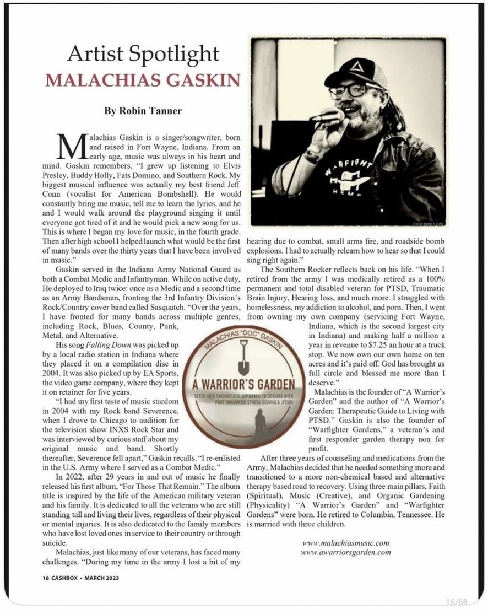
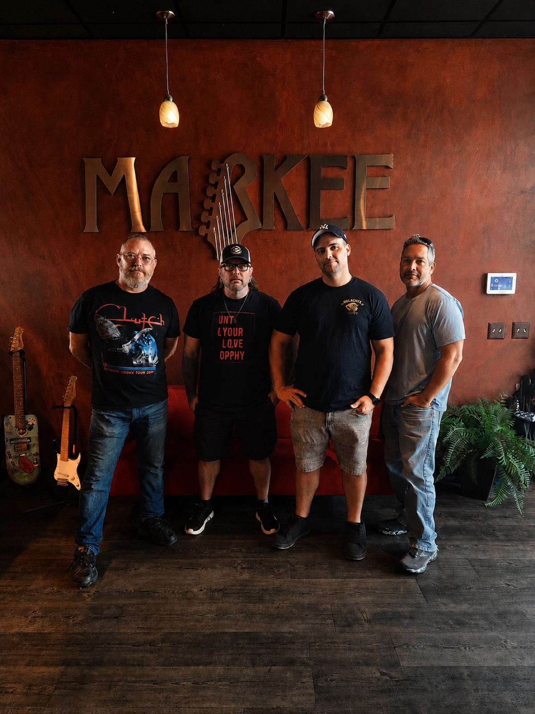
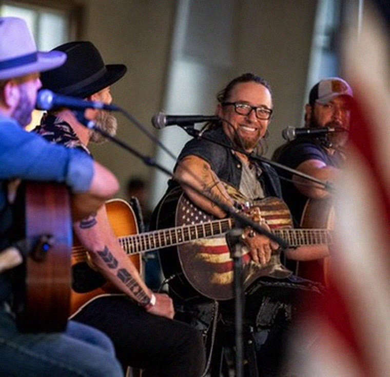

BEFORE THIS BAND EVEN EXISTED…

CASHBOX MAGAZINE
MARCH 2023
was already telling Malachias Gaskin’s story.
ARMY VETERAN
COMBAT MEDIC
IRAQ — TWICE
ARMY BANDSMAN

2026.
NEW BAND.
NEW CHAPTER.

FIVE MUSICIANS.
ONE VETERANS DAY STAGE.

ROAD TO SAN ANTONIO
NOV 12
Help us get there.
malachiasmusic.com/road-to-san-antonio